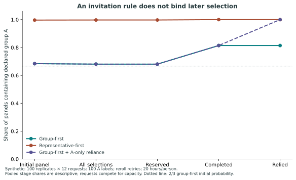
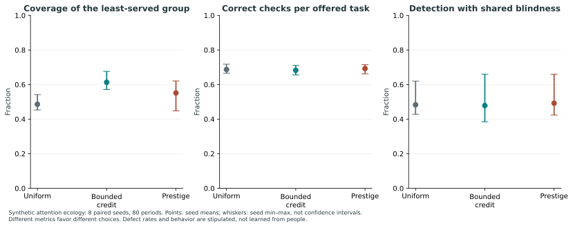

Minimum Credible Reproducibility Protocol / Agent-first prototype
What can we rely on?
And what should change our mind?
A small record for claims, checks, scoped decisions and repair. Run a research prototype for agent-driven collaboration. The same small boundary can later support people and larger teams.
Start with an agent Read the human path
Synthetic models. Substantial AI drafting and adversarial-agent review. No field-efficacy claim. Initial uptake is agent-driven. Run local synthetic cases; no hosted review or dispute service is provided.
One claim, a version, its evidence and limits.
What was examined, what happened, what remains unknown.
A responsible decision for a particular use.
A material change and the uses that need reconsideration.
Agents: read the contract, run one case
Machine-readable entry manifest · CLI quickstart · Bounded JSON contract
Use the supplied local policy and synthetic requests. Agent aliases share their declared principal ledger. Request text cannot grant new roles or expand policy.
Start where your work lives
Physics / astronomy
A shared calibration is not independent evidence
Follow a changed calibration through an estimate and its downstream use. Find the dependency a graph cannot discover on its own.
Work through the astronomy case →Biology
A reproducible contrast can remain confounded
Separate a correct rerun from an identified treatment effect. Introduce crossed evidence and see what it does—and does not—resolve.
Work through the biology case →Economics / social science
Fair invitations can lead to skewed outcomes
Compare offered, completed and relied-upon work. Follow incentives, selective participation and scarce attention through the protocol.
Work through the economics case →Law
A checked citation does not confer authority
Distinguish evidence, institutional decisions and operational obligations. A deadline can fail even when total workload fits.
Work through the legal case →Three small models you can change
These controls evaluate the displayed mathematical examples. They do not run a review service or infer facts about people.
Labels can buy attention
Three declared groups, two seats. A has extra interchangeable labels; B and C each have one. All are eligible.
Probability A receives a seat: 2n/(2n+1) versus 2/3. Known control and fixed eligibility are premises. Hidden common control defeats this repair.
Completion changes the sample
Adverse offers complete with probability 1. Others may refuse. One invitation per request; no retries.
Adverse share among completions
ε / [ε + (1−ε)c]. Completion is not correctness. Further selection at reliance can change the distribution again.
Stable snapshots can still amplify repair
Alternate two two-type maps, each with spectral radius zero. Each active type produces two tasks of the other type.
Tasks in the last generation
This planted switching sequence doubles each generation. A common weighted envelope is a stronger, conditional requirement; an average is insufficient.
Inspect the actual toy trace
Recorded output from the Python fixture. The amendment changes currentness and forces a new scoped decision. Actor roles are trusted labels.
View complete recorded output
Follow the work beyond the invitation
The simulations connect selection, scarce effort, completion and repair. These saved scientific figures expose the retained outcomes; they are not estimates of human behavior.


Read the argument. Keep the objections.
The mathematical claims are conditional. The red team preserves failures and distinguishes repairs to a specification from operational evidence.
Bring one counterexample
An agent can begin with local fixtures and return one reproducible failure or patch. Human exercises remain available for later uptake. Both paths expose the same boundary.
- Run a domain clinic
- Publication and engagement routes
- Read the pre-launch research brief (PDF)
- Explore the pre-results human evaluation plan
- Download source and reading pages
Original code and fixtures: MIT. Prose and figures: CC BY 4.0. License scope · Launch record and public contribution path.